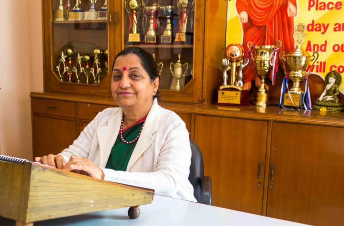

Our Principal : Mrs. Kokila Prabhakar

We rejoice in the fact that Oxford has completed 45 years with various milestones showcasing the talent
of our students, the overwhelming support of the parents and our ceaseless efforts.
The school has grown from strength to strength and we look forward with a sense of hope towards a still
greater growth and progress. The school is helping in transformation of the social, cultural and educational pattern of the people in the area by imparting best education to mould students into responsible citizens for the future.
I strongly believe that when people work together using their full potential, and are inspired by
a worthy purpose,everything is possible and the world can be changed.
Let us continue to become the change we want to see—let us continue to work towards a world
where children are able to go further,dream bigger and accomplish more than any generation
before.
I would like all the students to envision what is ahead for them.
Students, allow yourself to be challenged, to grow and to evolve and all the world will be your
oyster.
Let us continue to work with a positive outlook to build Oxford into a goldmine of intellectual opportunity, each day, all the year through.